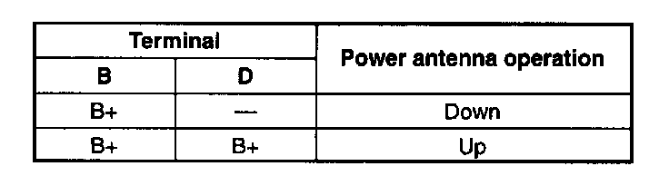
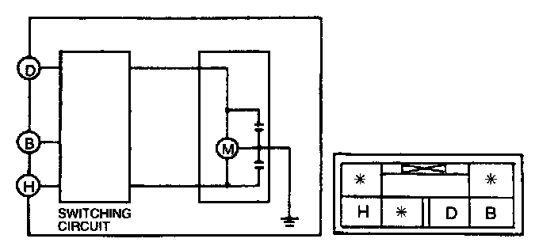

Antenna: Testing and Inspection
POWER ANTENNA INSPECTION1. Remove the trunk side trim (LH).
2. Disconnect the power antenna connector.


3. Connect ground to terminal H of the power antenna.
4. Connect battery positive voltage to the following terminals of the power antenna. Verify that the power antenna operated as indicated below.
5. If not as specified, replace the necessary part.